shadem documentation
The great Roger Miller once sang, As long as there's a hill there's a valley / Long as there's a valley then the river can flow free / As long as there's a Sun there's a shadow / As long as there's a shadow there's a place for you and me. While it's possible that he was referring to sneakin' around with some little lover, it's just as likely that he was singing praises of shadem, the new hill-shading function for Matlab.
shadem adjusts lighting to give a sense of depth to the display of gridded elevation data. Although it was designed for use with the Matlab's Mapping Toolbox, this function can just as easily be used for pcolor or surface plots of any type and the Mapping Toolbox is not required.
Matlab's Mapping Toolbox is packaged with several sub-par functions that are intended to create shaded relief maps, but the built-in shading functions are difficult to use, create unattractive maps, and cannot be used with a colorbar.
Where surflsrm, surflm, shaderel, and meshlsrm each require an iterative process of guess-and-check to determine visually appealing lighting azimuth and elevation, shadem allows interaction with the map from the mouse and keyboard: Sunlight comes from wherever you click on your map, and intensity of the shading effect can be adjusted by pressing the up and down keys.
Contents
- Syntax
- Description
- Video Tutorial
- Example 1: 2D pcolor
- Example 2: 3D surf
- Example 3: Mapping Toolbox: 2D grayscale
- Example 4: Mapping Toolbox: 3D demcmap
- Example 5: Mimicking sunlight
- Example 6: Mapping Toolbox: Where Matlab's surflm fails
- Example 7: Mapping Toolbox: Where Matlab's meshlsrm fails
- Example 8: Bedmap2
- Known Issue
- Author Info
Syntax
shadem
shadem('ui')
shadem(...,LightAngle)
shadem(...,LightingType)
shadem(...,MaterialType)
shadem(...,gain)
shadem(...,'sun')
shadem(...,'obj',ObjectHandle)
[lighth,MaterialType,gain,LightingType,LightAngle] = shadem(...)
shadem('reset')Description
shadem applies simple lighting to surfaces and patch objects on the current axes.
shadem('ui') illuminates the current axes and opens a user interface. When the user interface is running, controls are as follows
- Mouse Click illuminates surfaces from the direction of the mouse click, at an elevation given by proximity to the center of the image. Clicking near the far right side of a map will make light come from the right at a low angle (low elevation). Clicking closer to the center of the image will illuminate topography from above (high angle).
- p sets LightingType to 'phong' method (default).
- f sets LightingType to 'flat' method.
- g sets LightingType to 'gouraud' method (discontinued in R2014b).
- n sets LightingType to 'none' turns lighting off.
- d sets MaterialType to 'dull' (default).
- space sets MaterialType to Matlab's 'default' material (but note the default material in this program is 'dull'.)
- m sets MaterialType to 'metal'.
- s sets MaterialType to 'shiny'.
- up key turns gain up.
- down key turns gain down.
- w sets light source color to white (default).
- q sets light source to a color of sunlight corresponding to sun elevation angle.
- Return confirms current settings and terminates the user interface. Hit Return only when you are satisfied with the way your map looks.
- Esc returns the map to its initial state and exits the user interface.
shadem(...,LightAngle) specifies LightAngle as a two-element array in the form [az el], where az is the azimuthal (horizontal) rotation of the light source and el is the vertical elevation of the light source. 0 azimuth lies at the six o'clock position on the map and positive degrees move counterclockwise around the map. An elevation of 90 degrees places light source directly above the map, creating a "high noon" type of shadow, whereas elevation angles closer to zero degrees create "sunrise" or "sunset" shadows. Interpretation of azimuth and elevation is the same as that of the view or lightangle commands. Default LightAngle is [90 45]. Any two-element array input to the shadem function is assumed to be a declaration of LightAngle.
shadem(...,LightingType) selects the algorithm used to calculate the effects of light objects on all surface and patch objects in the current axes. Options are
- 'phong' (default)
- 'flat'
- 'gouraud' (discontinued in R2014b)
- 'none' (but I'm not sure why you'd do select this option in shadem)
shadem(...,MaterialType) sets lighting characteristics of surface and patch objects. MaterialType can be
- 'dull' (default)
- 'default' (albeit not the default MaterialType in shadem)
- 'metal'
- 'shiny'
shadem(...,gain) specifies intensity of shading by exaggerating or minimizing the z component of the active surface. This is helpful when x and y coordinates of data mapping might range from -0.5 to 0.5 map units, while z data ranges from -4000 to 3000 meters. Default gain is 0. Negative gain values reduce the hillshading effect; positive values increase the effect. Any scalar input to shadem is interpreted as a gain value.
shadem(...,'sun') sets color of the lighting object as a function of light elevation angle to mimic the color of sunlight at sunrise/sunset, noon, or any angle in between.
shadem(...,'obj',ObjectHandle) specifies a surface object as a target when multiple surface objects exist in the current set of axes. This usage is a bit clunky, may result in strange maps, and is not fully endorsed by the author of the function. Nonetheless, the ability to specify an active surface sometimes helps the author of this function, and he thinks that maybe sometimes it could help you too.
[lighth,MaterialType,gain,LightingType,LightAngle] = shadem(...) returns a handle of the lightangle object lighth, MaterialType, gain value, LightingType, and LightAngle azimuth and elevation.
shadem('reset') resets shading by deleting light objects. Note that this may not completely undo all settings put in place by previous calls of shadem. In some cases this program alters z data values, and the 'reset' command does not return z values to their original state.
Video Tutorial
This video contains an example of using the user interface:
Example 1: 2D pcolor
Let's say we have some gridded surface like this:
pcolor(repmat(peaks,2))
shading interp
colorbar
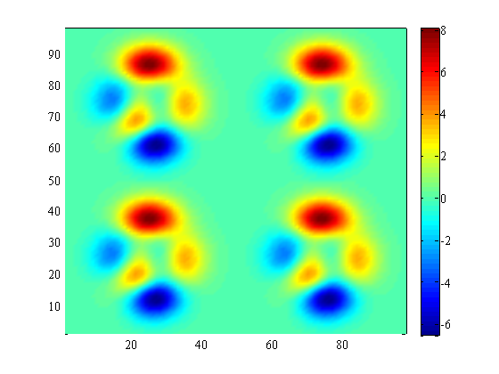 To give that surface a sense of depth, call shadem. The shadem function was designed for topographic maps, so the default MaterialType is 'dull'. However, for the peaks data set, let's make the surface shiny:
shadem('shiny')
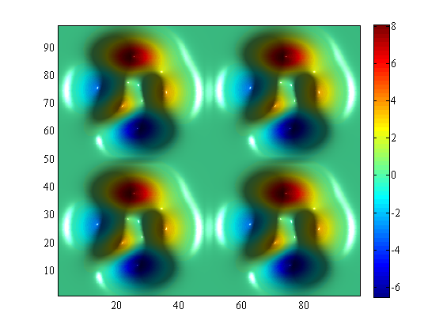 Example 2: 3D surf
This program also works with 3D data. To spice things up, I'll use the paruly colormap:
figure
surf(peaks)
colormap(paruly(256))
shading interp
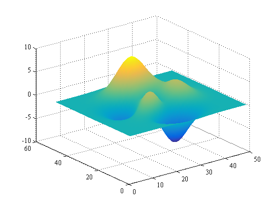 Apply shadem with Matlab's 'default' material propterties. Let light enter from 60 degrees in the horizontal at 50 degrees elevation:
shadem('default',[60 50])
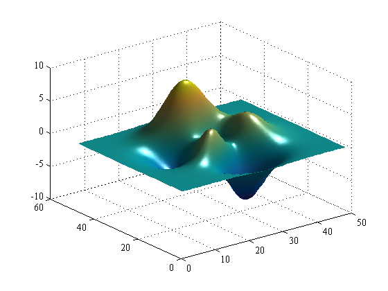 Example 3: Mapping Toolbox: 2D grayscale
Let's use the Mapping toobox and its built-in DEM data to illustrate shadem. First, create a flat grayscale image:
% gunzip the South San Francisco DEM file to a temporary directory filenames = gunzip('sanfranciscos.dem.gz', tempdir); [lat, lon, Z] = usgs24kdem(filenames{1},1); figure worldmap([min(lat(:)) max(lat(:))],[min(lon(:)) max(lon(:))]) cla % gets rid of distracting lines pcolorm(lat,lon,Z) colormap(gray(256)) caxis([-200 1200])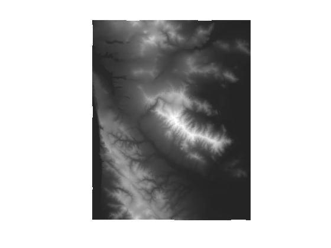
Now with one simple command, apply shadem:
shadem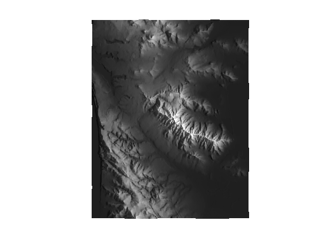
Example 4: Mapping Toolbox: 3D demcmap
The shadem function can also be nice for creating 3D data displays. Using the San Francisco data from the example above, we make a surfm image:
figure
worldmap([min(lat(:)) max(lat(:))],[min(lon(:)) max(lon(:))])
cla % gets rid of distracting lines
surfm(lat,lon,Z)
view(90,30)
demcmap(Z,256)
zoom(1.5)
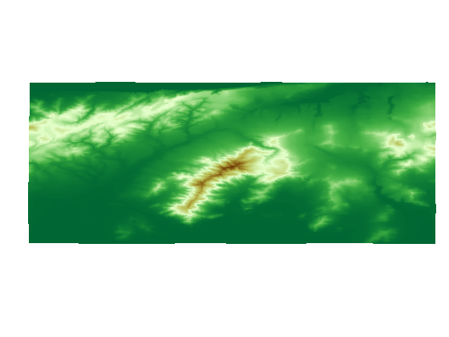 Now apply shadem. To get the LightAngle values I'm entering below, I first used shadem('ui') and clicked around until the map looked the way I wanted it to look.
shadem([-30 50])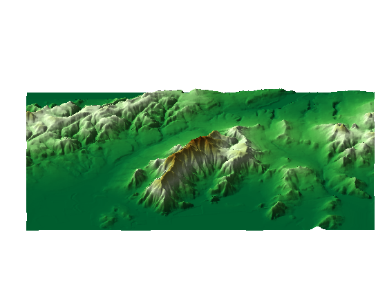
Example 5: Mimicking sunlight
The 'sun' option can be used to mimic the color of sunlight as a function of light source elevation (effectively, the time of day). Here we compare two 2D maps, one with the default white light source, the other with a slightly more natural sunset-like color:
figure('pos',[10 10 830 420]) subplot(121) worldmap([min(lat(:)) max(lat(:))],[min(lon(:)) max(lon(:))]) cla surfm(lat,lon,Z-80) demcmap(Z-80,256) shadem(3,[-60 15]) title('default white light') subplot(122) worldmap([min(lat(:)) max(lat(:))],[min(lon(:)) max(lon(:))]) cla surfm(lat,lon,Z-80) shadem(3,[-60 15],'sun') title('''sun'' option selected')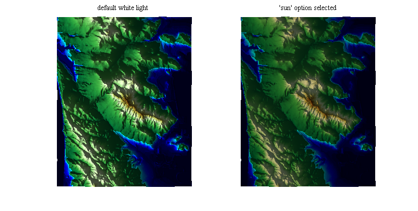
Example 6: Mapping Toolbox: Where Matlab's surflm fails
Matlab's built-in surflsrm, surflm, shaderel, and meshlsrm are a bit clunky to use because they require iterating light azimuth and elevation values and re-rendering a map several times until it looks right. The built-in functions also tend to make stark, low-resolution shading that lacks nuance. To illustrate this point, here we recreate a map using the example given in the surflm documentation:
figure('pos',[100 100 900 500]) load topo axesm miller axis off; framem on; gridm on; [lat,lon] = meshgrat(topo,topolegend); surflmtrash=surflm(lat,lon,topo); colormap(gray) coast = load('coast'); plotm(coast.lat,coast.long,max(topo(:)),... 'LineWidth',1.5,'Color','yellow')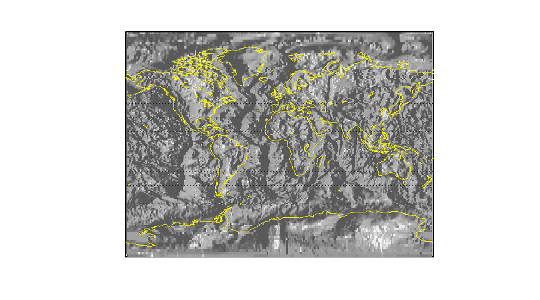
Yuck! How is the viewer supposed to make any sense of that? The shading by surflm brings visual clutter, but offers little sense of texture. Let's delete the trash produced by surflm, re-plot using surfm, and try again using shadem. With a little tinkering via the 'ui' command, I found that a gain of -13 and LightAngle of [210 75] do well to clarify the map:
delete(surflmtrash)
surfm(lat,lon,topo);
caxis auto
shadem(-13,[210 75])
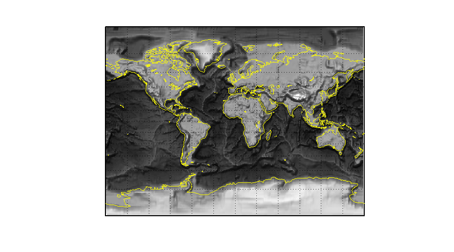 The underlying data are still of rather low resolution, but at least there's some sense of texture now. I like to think I've given this data a long-awaited sense of relief.
Example 7: Mapping Toolbox: Where Matlab's meshlsrm fails
In addition to creating busy, distracting shaded relief maps, Matlab's built-in topographic lighting functions have a tendency to create inaccurate colorbars. In fact, Matlab's very own example of meshlsrm exhibits this problem if you try to add a colorbar:
load korea Z = map; R = georasterref('RasterSize', size(Z), ... 'Latlim', [30 45], 'Lonlim', [115 135]); figure worldmap(Z, R) meshlsrm(Z, R, [45 65]) cb = colorbar; ylabel(cb,'elevation?')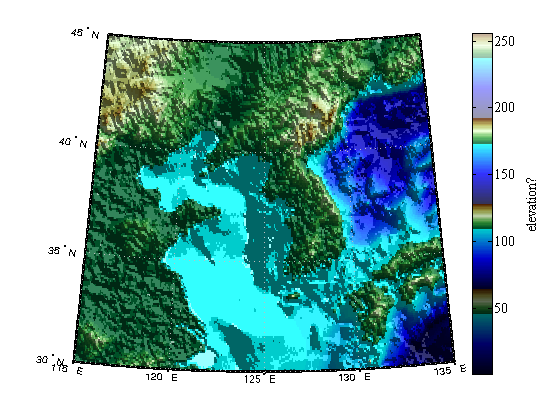
Now that's one wacky colorbar! And as with surflm, the shading appears pixelated and stark. Let's try using shadem instead of going through the whole meshlsrm rigmarole. Start by creating a map:
figure worldmap(Z, R) geoshow(Z,R,'displaytype','texturemap') cb = colorbar; ylabel(cb,'elevation') demcmap(Z,256)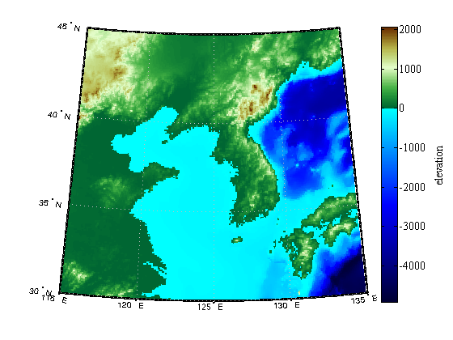
That colorbar is accurate, but the image is rather flat. Let's shadem it! When I was writing this example, I used shadem([45 65],'ui') to initialize the shadem user interface with illumination from the same azimuth and elevation as in the meshlsrm example above, but from clicking around it seemed that the light should come from a higher angle of elevation. I also tinkered with gain values using the up and down arrows until I found that I preferred a gain of about 8:
shadem([90 80],8)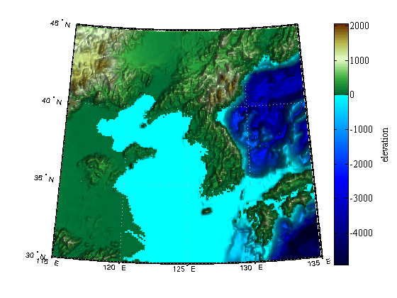
Note the intact colorbar. And the underlying data are still of Atari-game-like spatial resolution, but it's certainly more visually appealing than plotting the same data via meshlsrm.
Example 8: Bedmap2
...And for all you Bedmap geeks out there, we can use shadem with the Bedmap2 Toolbox for Matlab to recreate the iconic Figure 9 of Fretwell et al., 2013.
[lat,lon,z] = bedmap2_data('bed','res','3 km'); figure('pos',[10 10 1090 940]) antmap('northernlimit',-60) pcolorm(lat,lon,z); cb = colorbar('location','westoutside'); ylabel(cb,'Bed elevation (m asl)') colormap(jet(22)) caxis([-2000 2000]) antmap('lons',0:30:150,'lats',-80:10:-60,'linestyle',':','frame','off') % Apply shadem with Sun coming from top left: shadem([225 45],-18)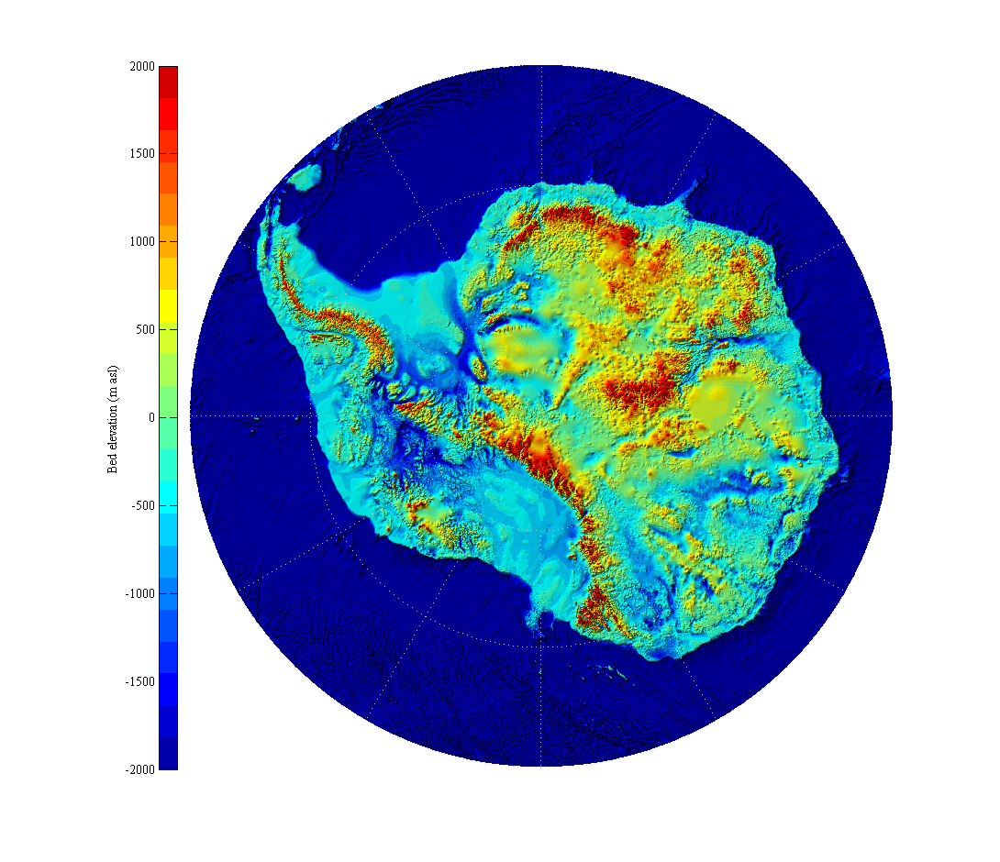
Known Issue
I have received feedback that the LightAngle cannot be adjusted when using the Mapping Toolbox with Matlab release R2014b. As I understand it, this bug only affects the Mapping Toobox release 2014b and has been fixed in R2015a.
Author Info
The shadem function and supporting documentation were created by Chad A. Greene of the University of Texas at Austin's Institute for Geophysics (UTIG). January 2015.